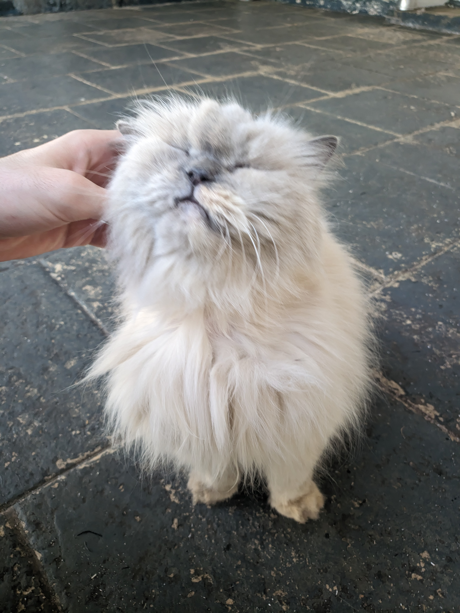

Branquinha
~ 2008 --- 07/03/2026
-
[07-03-26] - Hoje, em nossa casa, esvazia-se um quarto.
Voltei pela porta que fomos, com menos que antes.
Olho ao redor, como se você nunca tivesse sido,
mesmo dos espaços indescritíveis que você preencheu, imensuravelmente, muitas vezes em tácito.
E agora, dos seus instantes complicados para suspirar, escrevo esse símbolo dedicado, na tentativa de perseverar sua existência. Em memórias de mente minha, um eterno santuário seu.Na sua Saída desconhecida, saiba que eu te amo.
e agradeço sua companhia. <3